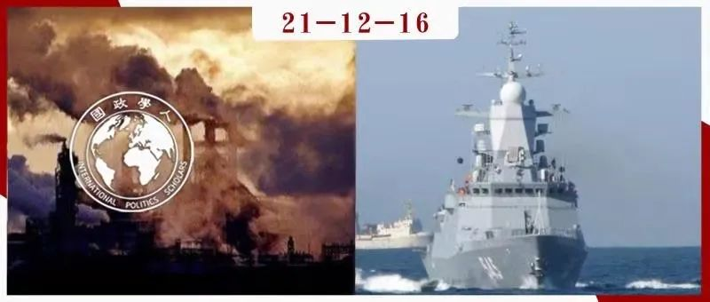

收录于合集 #《国际关系前沿》2021年第12期 22个

作品简介
作者： Johannes Plagemann, 法兰克福大学政治学系副教授，德国全球与区域研究院亚洲研究所研究员；Miriam Prys- Hansen，德国全球和区域研究中心项目研究负责人。
编译： 赵怡雯（国政学人编译员，山东大学东北亚学院国际政治专业）
来源： International Relations of the Asia-Pacific Volume 20, (2020) 275–305
doi: 10.1093/irap/lcy028 Advance Access published on 6 December 2018
归档： 《国际关系前沿》2021年第12期，总第39期。

内容摘要
强劲的经济增长力和自信的政治领导力使印度在全球治理中的地位日益突出。尽管传统学术观点认为印度的外交政策注重连续性，但本文要探讨的是印度在气候变化和海上安全两个政策领域的自我角色构想是如何变化的。本文采用角色理论方法来分析印度的官方声明，认为这些声明反映了印度的自我理解和对其他重要行为体的看法。尽管印度在这两个问题领域的角色构想都有所变化，但在海上安全领域自我定位的转变却更为深刻。通过比较，本文发现，促使印度的新兴大国角色向“更多责任”承担者转变的三个因素是：第一，权力分享比责任分担更有利；第二，锚定区域内的问题领域比全球政治层面的问题领域更能促使其发挥更负责任的作用；第三，积极的外部角色归属比消极的外部角色归属对责任承担更有效。
文章导读
01
导论
二十世纪，中国和印度等崛起中的大国能力显著增强，政治家和学者们开始呼吁这些大国在公共产品供给方面承担更多“责任”，为解决全球和地区的挑战贡献“公平份额”。作者认为，崛起大国逐渐意识到，作为全球秩序的共享者，它们有权利和义务维护国际社会（秩序）。
在全球分工中，各个国家（尤其是崛起中的大国）为自己和其他国家设想的角色类型，以及如何与其他国家的观点保持一致，对于理解各领域的治理过程至关重要。然而，对印度的观察表明，其在各领域“买单”的意愿存在差异。在海洋安全领域，印度已经开始宣传其在印度洋“净安全提供者”（net- security provider）的新角色。相反，在气候变化领域，印度长期以来一直拒绝承担任何财政或缓解责任，仍被束缚在其作为发展中国家的角色中。这便表明了印度在外交政策上的不同角色。通过对印度在不同领域的外交政策的探索性比较， 作者分析了崛起中的大国在何种情况下会发展出更“负责任”的外交政策角色，即为解决全球和区域性挑战贡献越来越大的成本份额。
下一节作者阐述了为什么分析国家的角色概念有助于理解崛起大国的外交政策，并解释案例选择的原因。此外，作者提供了根据问题领域和政治权力水平对外交决策角色进行背景分析的论据。在实证研究部分，作者重点关注印度在气候变化与海洋安全领域的自我认知角色如何变化并在结论部分将两个案例进行对比。分析表明，问题领域的特点确实在两个方面起到重要作用。 首先，可被归类为“权力分享”的问题领域似乎比分担责任的领域更有利于向更多的责任转变。其次，与那些位于全球政治主要层面的问题领域相比，具有强大的区域基础的问题领域似乎更有可能促使国家采取更加“负责任”的角色。 案例研究同时发现，积极的外部角色描述似乎比消极的外部角色描述更具变革性。
02
权力角色上升的背景
角色指的是行为体根据其在一个有组织的群体中的社会地位而做出的预期或适当的行为模式。角色理论方法不仅仅是将国家角色概念作为国家外交政策行为的因果因素，而是将角色理解为社会认同的一种表现，这种认同是通过自我与他者的区分过程来构建的。因此，当印度为自己的行为制定理由时，这也说明了其对其他相关行为者的适当行为的信念与期待。
在定性案例研究中，本文所选择的两个政策领域在两个重要方面是相似的。 首先，在过去的十年中，国内对威胁和脆弱性的认知有了明显的提高。 政治精英和公民均已意识到危险的气候变化对印度的负面影响。在海上安全方面，人们对脆弱性的认识也在增强，印度感到感到自身受到长期的安全威胁，尤其在海上安全领域。
由外而内解释外交政策制定的方法假设，国家在特定问题领域的外交政策行为所产生的国内成本和收益预期可以解释差异。本文案例中，收益和成本的分布是相当对称的。海军和气候变化项目的投资由国家预算承担，而印度政府的投入非常有限。同样，由气候变化的缓解或安全的海上航线所带来的贸易利益与能源安全等潜在收益，特别是在全球政治层面上的地位收益，很难在地区或社会群体之间分解。印度两大主要国家政党在气候变化和海洋安全问题上达成的共识也反映了影响的对称性。换句话说，这两个问题领域的特点使人们有理由忽视国家的内部运作。
第二，全球期望在这两个领域都有所增加。 直至近期，印度在全球气候制度中还是一个无可争议的非附件一国家（Non-Annex I state），即享有优先发展权的国家。随着一系列气候条约的签订，这些确定性已经崩溃，为印度向更加负责的角色转变创造了极大的压力。在海洋领域，印度历来坚持在国际事务中的战略自主权，因此通常不愿意充当其他国家的安全提供者。然而，印度正面临着越来越多的外部期望。
虽然内外压力相似、成本与收益的分配在两个问题领域同样对称，但气候变化和海洋安全的问题结构大有不同。气候变化体系中需要解决的治理问题是缓解和适应一个温室气体排放不断增加的世界。缓解不是一个典型的权力或商品分配问题，而是一个责任分担的问题。这与它是一个“纯粹的”全球公共产品（非竞争性和非排他性）有关。
与全球公共产品相同，区域公共产品也具有非竞争性，但只为区域内指定国家集团提供或主要提供。从这个角度看，海洋安全比气候变化更为模糊，这与海洋安全组成部分的多样性有关。尽管通过打击海盗和保障海上交通线等方式提供海上安全显然与在各行为体之间分配的特定财政负担有关，海上力量的积累和将权力投射到国家自身沿海地区以外的地区，决定了国际体系内一定的权力分配。因此，一个没有海盗活动的印度洋可以作为区域公共产品，但安全的海上通信通道和海洋领域的“基于规则的秩序”则最好归类为有利于那些在领土主张、安全架构和多边进程方面维护现状的国家的俱乐部产品。
对于印度或其他崛起中大国来说，在全球谈判中，搭便车接受其他国家的承诺更具可行性，但这在区域内几乎不可行。
总的来说，本文认为，在全球权力转移的特定情况下，除了国内和国际的不同压力外，在上述两个问题领域（以及其他领域）对“负责任的角色”的接受程度会发生变化。正如下面案例研究展示的，角色在其中一个问题领域发生了重大变化，但另一个领域并没有。
**
**
03
气候变化：“英勇的受害者”
印度在气候制度中的自我认知是建立在将气候政治视为西方主导的议程的一部分并且是在威胁印度的经济发展之上的。 长期以来一些类似“印度承担气候变化责任是环境殖民主义的例子”的观点对印度的公众和政治精英对全球气候谈判的看法产生了广泛的影响。因此，印度扮演了一个受害者形象，而非承担重要责任的行为者。
20世纪中期，印度在国内已经开始推行更积极的气候政策。2007年，印度政府在成立了气候变化总理委员会（PMCCC），负责协调国家气候变化行动计划（NAPCC）。2009年，印度在全球气候制度中的参与也在某种程度上转向了一个更和解的立场。 印度以“问题解决者”自居，并表示“准备发挥其作为国际社会负责任成员的作用并做出自己的贡献”。
2009年哥本哈根峰会后，印度对全球气候变化的参与更具建设性，提出了印度对气候变化脆弱性的概念。2015年，总理莫迪宣布成立太阳能联盟并于印度设立秘书处。2018年3月与印度举行的首届峰会被广泛认为是将印度置于全球关键领导地位的机遇，但倡议并未得到落实，因此并未取得可衡量的成果。此后，印度继续将自己塑造为一个发展中国家，以及发达国家未尽的历史责任的受害者。
近年来，另一个有意思的变化是，印度已经开始以一种复杂的方式利用其不断增长的国内（物质、技术和科学）能力，构建一个国家的“英雄”形象，渴望成为全球气候变化解决方案的一部分。
时至今日，印度坚持认为在发达国家远未履行其义务的情况下，自己所做的努力远远超过其份额。此外，印度并不羞于公开强烈要求其他国家采取具体行动。通过强调印度自身的成就，如单方面降低其排放强度，印度将其对其他国家的期待变成一种道德论证。因此，如果印度的主要角色是对自己国家的贫困人口和经济发展负责而对全球气候变化的责任接近为零，那么解决气候变化就是发达国家的专有责任。这意味着，印度的考虑和主要责任是监督这些国家负起责任。与此同时，印度在全球层面上依然保持着“英雄受害者”的话语。
04
海上安全：“净安全提供者”
当前在海上安全领域，尤其在印度洋沿岸，印度自诩为“净安全提供者”。在印度视为适当的责任、履行这些责任与期望等方面，这一角色与先前的做法有所不同。独立后的大部分历史时期，印度安全讨论的重点是维持国内稳定和应对北方陆地上的安全威胁。相较之下，印度的海洋周边地区，被认为是冷战时期超级大国竞争的舞台，仅在印度的安全讨论中占据极小的部分。
尽管如此，数十年以来印度海军界一直在培养印度作为一个“古老的贸易和航海国家以及未来的全球大国”的理念。21世纪初，印度海军开始出台了一系列开放获取文件、海事理论与强调印度对海军力量投射的战略性需求的策略。
2004年的印度洋海啸被视为变革性转折。印度海军舰艇率先抵达，为印度尼西亚、马尔代夫和斯里兰卡提供了大量救援物资。随后印度被邀请参加“海啸核心小组”，参与协调日本、澳大利亚和美国对危机的应急反应。人们出乎意料地发现了印度在国际援助方面的软实力及其对全球和区域地位塑造的潜力。此后印度海军参与了多场救援活动，政府及媒体报道称， 印度的疏散行动是印度日益增长的影响力和军事能力的信号，也是其作为一个负责任大国角色的体现。
“净安全提供者”一词由当时的美国国防部部长罗伯特·盖茨（Robert Gates）在2009年香格里拉对话中提出，并在2010年的国防审查中再次提出：
印度已经通过反海盗、维和、人道主义援助和救灾工作建立了世界性的军事影响力。随着其军事能力的增长，印度将作为印度洋和其他地区安全的净提供者为亚洲做出贡献。
印度官方声明和报告可明确看出，这一概念已被印度政府官员接受。印度还加强了在印度洋上的多种海洋论坛和合作计划的参与，其中许多是为了应对灾难，同时也是为了满足美国希望用印度对冲中国的战略利益。
总而言之，本文观察到印度在自我设定的角色和责任方面发生了一些变化。“净安全提供者”这个模糊的术语已被应用于传统和非传统安全，从保护海道、救灾和疏散行动到监测专属经济区等良性任务，到实际上管理岛屿国家的海岸警卫队，以及向越南等印度洋沿岸国家提供军事装备和培训。除了更广泛的责任范围外，该术语还暗示了从西印度洋，包括非洲东部海岸线国家，到东南亚国家，如新加坡和越南的地理扩张。这使印度自诩的区域安全伙伴角色更加突出。
印度角色概念的另一重要变化来自于印度在与域外大国接触时的积极性，以及在海洋事务的多边合作中发挥作用。 虽未达到具有约束性的联盟程度，但印度新型的海军外交与冷战结束前坚持自主和抵制联盟形成鲜明对比。印度似乎扮演了一个调解者的角色，不仅愿意保护受到安全威胁的全球公域（海上通道），还愿意为集体安全协调提供必要的沟通空间。
05
不同政策领域对“责任”接受程度不同的原因
在气候变化和海洋安全领域，印度的自我概念化以及对他者的概念化均有不同。 在海洋安全领域，印度接受了新角色，暂时扩大了其区域责任范围，并大大改变了对域外国家责任的认知。而在气候变化领域，印度仍坚持其传统的角色。 比较两个领域的差异，本文初步提出了三个原因，可以作为假设在未来的研究中加以检验。
首先，在海洋安全领域，印度一直在促进自身“净安全提供者”角色发挥作用，同时也对多边交往愈加开放。权力分享的要素最明显地体现在当下对美国在印度洋大量军队的广泛接受和暗中鼓励。相较之下，气候变化是一个全球治理问题，其核心在于如何分担（不断增长）的财政负担。气候问题的主要冲突是谁买单，这就是在“差异化”主题下不断探讨的问题。因此作者假设， 分享权力（仅有限的负担）比分享负担（仅有限的权力）更有利于自我观念的改变。
**
**
第二，全球层面的气候变化框架让印度退缩到公平和正义的广泛原则后面，这在印度自己的角色概念和其他国家的角色概念中都有体现。鉴于世界历史和不平等，印度很容易坚持其作为发展中国家的自我分类，在道义上有义务优先考虑国内发展而不是外交承诺，这也是印度外交政策中长期坚持的一个重要原则。
印度作为“净安全提供者”的角色赋予了印度洋沿岸国家一个领导者与追随者的关系，但印度并没有选择不受挑战的地区领导地位，而是承认域外大国的利益，并允许沿岸国家与域外大国的接触。表面上看，净安全提供者意味着印度对小国的援助是补充性的，而不是排他性的。同时，考虑到其他区域政策领域，如印度已经成为域内主要的援助国。由此可以假设， 区域层面比全球层面更有利于崛起中大国发展更负责任的角色。
第三，与外界的沟通方式似乎十分重要，至少可以作为对特定角色倾向的催化剂。尽管印度有反美情绪，但其仍毫不犹豫地采用了美国设计的角色概念。近年来，美国的高级政府官员和政策制定者开始使用“印太”的概念代替“亚太”。印度新角色不仅是对美国角色归属的回应，也反映了沿岸国家对更广泛的国际关系中的合作愈加感兴趣。
与此相反，气候变化谈判中，印度被西方视为达成有效协议的主要障碍者之一，与中国对美好前景的积极追求形成鲜明对比。作者提出一个探索性的假设： 与政治心理学和传播学的核心原则一致，即被外界强化的自我概念更容易被坚持。
此外，两个问题领域中涉及的地位提升是不同的。在印度洋地区的可靠军事存在可以直接转化为持久的、硬实力的地位收益，而在全球气候变化谈判中采取妥协性的谈判方式则更为直接有效。从这个角度看，印度在太平洋地区的角色转变可能只是反映了其作为重视地位的大国的特点，以及其保持（或建立）地区领导地位的愿望。
最后，本文促进了对多极世界政治中全球和区域公共产品供给的理解。大国在何种情况下愿意在政治上和资金上投资以获取领导权，是长期争议的问题。在后霸权主义的世界秩序中，角色理论的方法能发挥重要作用。独立于政治领导层，在涉及权力分享的区域性政策领域，在相关的其他国家的积极角色描述占上风的条件下，最有可能接受提供公共产品的成本。同时，来自亚洲的崛起大国在全球公共产品供给方面发挥领导作用的期望只是有选择地得到实现，这主要是由于根深蒂固的外交政策角色的持久力量不利于根本性的变革。
06
结论
与印度类似的新兴大国将在未来的国际体系中发挥重要作用。因此，了解他们对其他国家不断变化的期望以及他们在全球治理中愿意发挥的角色概念十分重要。角色理论之所以适用于解释外交政策领域，是因为其对国家在国际体系中国家等级结构的变化十分敏感。
新兴大国往往为其特定的角色概念提供了不同的道德和理性的理由，这些理由有时会相互矛盾，但他们也在利用这些矛盾不断调整自身的角色定位。
以上三个由比较分析得出的结论都值得更仔细的研究，最好是通过增加另一组问题领域，其同样具有强烈的脆弱性和外部期望（如网络安全或对外援助政策），国内影响的对称性，在责任分担与权力分享、区域与全球责任、积极与消极角色描述方面的不同性质，以及角色变化的不同程度。因此，未来的研究可能会评估上述三个主张和潜在替代解释的有效性。
译者评述
本文选择印度在两个政策领域的角色定位为案例，探讨新兴大国在国际社会中如何选择承担的责任和分享的权力，运用角色理论来对比分析印度在海上安全和气候变化领域中对自身和他者的角色定位。通过具体分析相同和不同之处，作者得出了三点重要假设，即角色和外交政策的确定与权力和责任的衡量、全球性或区域性的划分、外界固有观念有关。这三点层次分明，但均指向部分国家在寻求权力分配、谋求国际地位时动作积极，而选择性承担国际责任。
角色理论应用于国际关系研究并以国家为主要行为体进行分析时，更多展现了国家在国际社会中的互动与外交政策的变化，正因如此能够捕捉国际地位等级中的细微变化。在本文中作者创新性地将角色理论方法运用于分析印度的外交政策，且颇具特色的案例选择让人们直观地感受到了新兴大国在国际社会产生影响的矛盾心理。从作者选取的公开声明或相关政策文件中可以分析出角色定位与国家自我信念、国家对他者的信念之间的关联，同时作者还提出了国家是如何运用外界对本国的固有判断而塑造自身形象，这点也十分有趣。
词汇整理
角色理论 role theoretical
净安全提供者 net-security provider
非附件一国家 (LTA) Non-Annex I state
矛盾心理 ambivalence
责编 | 张曼娜 穆若彤
排版 | 彭雯昕 梁羽
文章观点不代表本平台观点，本平台评译分享的文章均出于专业学习之用, 不以任何盈利为目的，内容主要呈现对原文的介绍，原文内容请通过各高校购买的数据库自行下载。

国政学人
支持学术公益与知识传播
微信扫一扫赞赏作者 __赞赏
已喜欢，对作者说句悄悄话
取消 __
发送给作者
发送
最多40字，当前共字
上一页 1/3 下一页
长按二维码向我转账
支持学术公益与知识传播
受苹果公司新规定影响，微信 iOS 版的赞赏功能被关闭，可通过二维码转账支持公众号。